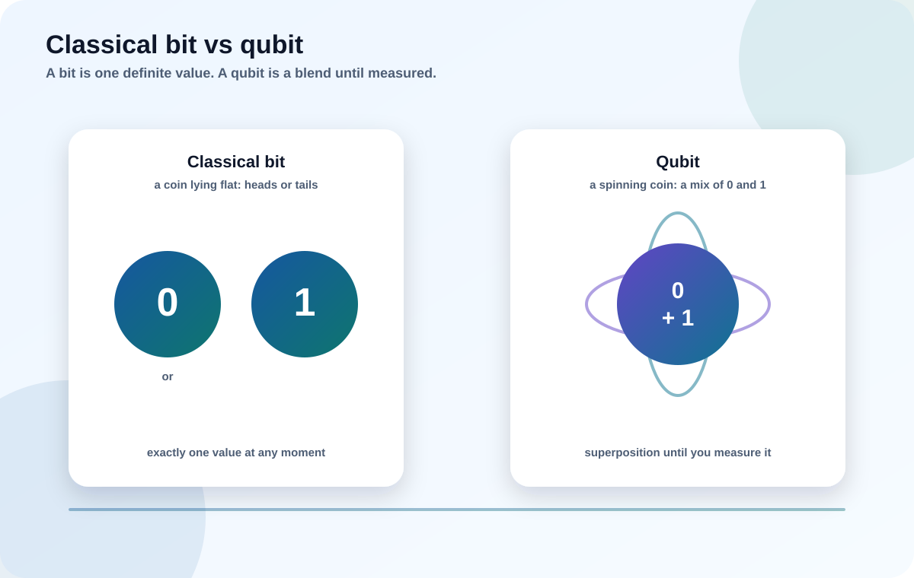

People say "quantum computers will break encryption" without ever explaining what a quantum computer is. Let's fix that with analogies, not equations — just enough to understand the threat clearly and avoid the hype.
Describe a qubit and superposition without any math.
Explain why quantum helps with some problems and not others.
Separate real capability from science-fiction claims.

Try it: a bit is a coin lying flat, a qubit is a coin spinning
Step through the difference. This single idea explains most of the confusion about quantum computing.
Myth to drop right now
"A quantum computer just tries all answers at once and instantly picks the right one." Not true. It holds many possibilities, but measurement gives only one result. Speedups come only when a clever algorithm makes the right answer interfere constructively. Most problems get little or no speedup.
1
Classical bits vs qubits
Everything your phone does is built from bits that are strictly 0 or 1. A quantum computer adds a new building block.
A qubit can be 0, 1, or a controlled mixture of both. Physically it might be a superconducting circuit, a trapped ion, or a photon — the hardware varies, but the behavior is what matters to us.
The power grows with scale. Describing the state of n qubits requires 2n numbers (amplitudes). Ten qubits: 1,024 numbers. Fifty qubits: over a quadrillion. This is why quantum machines can, in principle, explore enormous spaces — but only if you can extract a useful answer at the end.
Analogy
A classical computer checking possibilities is like one person walking every path of a maze one at a time. A quantum computer is more like sending a wave through the whole maze at once — but you only get to see where the wave is loudest, so you must design the maze so the exit is the loudest spot.
2
Superposition, entanglement, and interference
Three words do the heavy lifting. You already met superposition; here are the other two.
Superposition
A qubit is a blend of 0 and 1 until measured, with amplitudes controlling the odds of each outcome.
Entanglement
Qubits can be linked so their outcomes are correlated no matter the distance. This lets operations act on the whole system's structure at once.
Interference
Amplitudes can add up or cancel out, like ripples on water. Good algorithms cancel the wrong answers and reinforce the right one.
Cryptography is threatened not because quantum computers are "faster at everything," but because a few specific algorithms use interference to solve the exact math problems that certain cryptography depends on. That is the bridge to the next section.
3
What quantum computers are actually good at
Two algorithms matter for security. Everything else is mostly a research and modelling story.
Algorithm
What it does
Effect on cryptography
Shor's algorithm
Efficiently finds the hidden period in a math structure — which cracks integer factoring and discrete logarithms.
Breaks RSA, Diffie-Hellman, and elliptic-curve crypto. This is the core reason PQC exists.
Grover's algorithm
Searches an unsorted space with a roughly square-root speedup (N → √N tries).
Weakens symmetric keys and hashes. AES-256 keeps a strong margin; short keys should grow.
Concrete example
Shor turns "factoring a 2048-bit RSA number," which is effectively impossible for classical computers, into something a large enough fault-tolerant quantum computer could do in hours or days. Grover only halves the effective strength of a symmetric key, so AES-256 still behaves like ~128-bit security — still far out of reach.
Takeaway
Shor drives replacement of public-key crypto. Grover drives bigger keys/hashes, not replacement. That asymmetry shapes the entire migration.
4
What quantum computers can NOT do
Cutting through hype is part of understanding the threat.
They are not just fast classical computers. For most everyday tasks they offer no advantage — and are far slower and more fragile.
They do not break AES-256 or SHA-2/3 outright. Grover only chips at the margin; doubling key length restores safety.
They cannot read a superposition's full contents. You get one measured answer, so brute-forcing "all passwords at once" is a myth.
They are extremely error-prone today. Qubits lose their state (decoherence) in microseconds and need heavy error correction.
Nuance
The honest summary: a cryptographically relevant quantum computer (CRQC) does not exist yet, and estimates of its arrival vary widely. But you migrate based on data lifetime + migration time, not on a confident date — that is PQC-101.
5
How far away is a threatening machine?
Today's chips have hundreds to low-thousands of physical qubits. Breaking RSA-2048 needs something very different.
The gap is error correction. Physical qubits are noisy, so many of them are combined to form one reliable logical qubit. Published estimates to break RSA-2048 involve on the order of thousands of logical qubits, which could mean millions of physical qubits — well beyond current hardware.
Why plan now anyway
Two reasons. First, "harvest now, decrypt later": data you send today can be stored and decrypted after a CRQC arrives. Second, replacing cryptography across a large organization takes years. If your data must stay secret longer than "time to a CRQC minus migration time," you are already behind. PQC-101 gives you a calculator for exactly this.
Takeaway
You do not need to predict the date. You need to know your data's lifetime and start early for the long-lived, exposed, public-key-dependent systems.
Hands-on labs
Decide first, then reveal.
Lab 1 · Debunk the pitch
A vendor claims their quantum computer "instantly tries every possible key and returns the right one."
What is wrong with that claim?
Recommended answer Measurement returns only one outcome. Without an algorithm that makes the correct answer interfere constructively (which brute-force search does not), you just get a random guess. Grover gives only a square-root speedup, not instant answers.
Lab 2 · AES vs RSA
Two systems: one protects data with AES-256, another authenticates with RSA-2048.
Which is in more danger from a future quantum computer, and why?
Recommended answer RSA-2048 — Shor's algorithm breaks it. AES-256 only faces Grover's square-root speedup, leaving it effectively ~128-bit strength, which is still safe.
Lab 3 · Physical vs logical qubits
A headline reads "new chip hits 1,000 qubits."
Does that mean RSA is about to fall?
Recommended answer Almost certainly not. Those are noisy physical qubits. Breaking RSA-2048 needs thousands of logical (error-corrected) qubits, which may require millions of physical qubits. Qubit count alone is a misleading metric.
Knowledge check
Score 70%+ to mark this module complete.
Score: 0/0
Primary sources
Educational overview; consult primary standards before decisions.
This module builds intuition, not equations. Step through the bit-vs-qubit walkthrough first, then read the lessons. The goal is to understand the threat without hype.